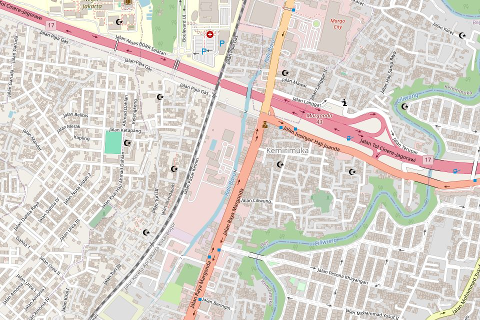

Poli umum
Keluhan harian dewasa: demam, batuk, nyeri, kontrol penyakit kronis, sampai pembuatan surat keterangan sakit.
Klinik rawat jalan keluarga di Beji, Depok. Poli umum, gigi, anak, dan laboratorium sederhana dalam satu lokasi. Datang tanpa perlu membuat janji lebih dulu.
Semua layanan yang paling sering dibutuhkan keluarga ada di sini, jadi tidak perlu berpindah tempat untuk pemeriksaan dasar.
Keluhan harian dewasa: demam, batuk, nyeri, kontrol penyakit kronis, sampai pembuatan surat keterangan sakit.
Pembersihan karang gigi, penambalan, pencabutan, dan pemeriksaan rutin untuk dewasa maupun anak.
Pemeriksaan anak sakit, imunisasi sesuai jadwal, dan pemantauan tumbuh kembang bersama orang tua.
Pemeriksaan darah rutin, gula darah, kolesterol, asam urat, dan tes kehamilan. Sampel diambil di tempat.
Tersedia juga imunisasi, layanan kesehatan ibu dan anak, serta konsultasi KB. Lihat semua layanan
Hari kerja buka pukul 07.00 sampai 21.00, jadi masih bisa mampir setelah jam kantor. Sabtu sampai pukul 13.00 dan Minggu pagi tetap melayani.
Untuk poli umum, cukup datang dan ambil nomor antrean. WhatsApp kami pakai kalau kamu ingin memastikan dokter yang kamu tuju sedang praktik.
Pemeriksaan laboratorium dasar, obat, dan konsultasi dokter berada di satu tempat, sehingga sekali datang bisa selesai sekaligus.
Kamu bisa memastikan dokter tujuan sebelum berangkat, lalu mengabari kami lewat WhatsApp.
Berada di Jalan Margonda Raya, sekitar lima menit berjalan dari halte Trans Depok. Ada tempat parkir mobil dan motor di halaman depan.
Jalan Margonda Raya Nomor 214
Kemiri Muka, Beji, Depok, Jawa Barat 16423
Telepon (021) 1234 5678
WhatsApp 0812-3456-7890
| Hari | Jam |
|---|---|
| Senin–Jumat | 07.00 – 21.00 |
| Sabtu | 08.00 – 13.00 |
| Minggu | 08.00 – 12.00 |

© OpenStreetMap contributorsKirim pertanyaan lewat WhatsApp dan petugas kami jawab pada jam layanan. Sebutkan keluhan atau poli yang dituju supaya kami bisa mengarahkan lebih cepat.